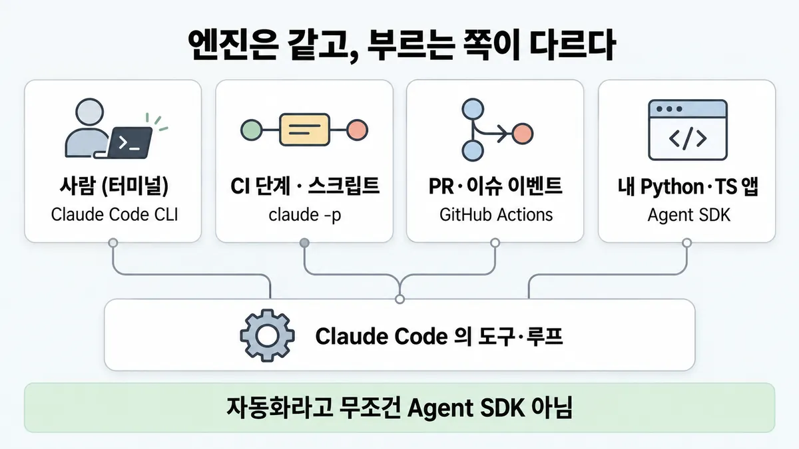
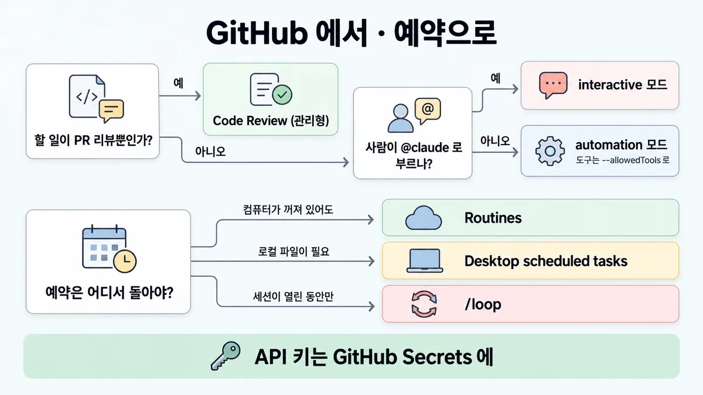
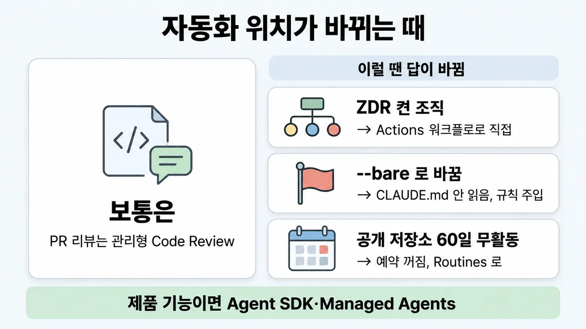

■ 자동화 surface 고르기
표시가 없는 문장은 공식 문서에서 확인한 내용이에요. 다른 표시는 읽는 법
왜 배우나 — 시험이 요구하는 것
시험 목표 7.2 개발 흐름 개선 · D7 개발팀 7%Improve developer workflows using AI-assisted tooling
이 개념으로 푸는 판단 (할 수 있어야 하는 것)
- 7.2② 반복 작업 자동화, 어느 표면에 올리나? — Claude Code(대화형) / claude -p(CI·스크립트) / GitHub Actions / Agent SDK / Managed Agents
- 7.2③ AI 코드 리뷰, 무엇을 보고시키고 어떻게 넓히나? — 리뷰 지시(전부 보고 → 뒤에서 거르기)와 도입 확대 방식
한눈에
개발팀 반복 작업을 어디에 올리나. 엔진은 같음(Claude Code 의 도구·루프 — GitHub Action 도 Agent SDK 위에 만든 것) → 가르는 건 **무엇이 부르나(사람·CI 단계·저장소 이벤트·내 앱·예약) · 누가 돌리나**
연동 방식 일반 판단(누가 루프를 돌리나 · ZDR)은 ◆ 직접 API vs Agent SDK vs CLI vs Managed Agents. 여기는 팀 반복 작업 관점
비유 로컬 cron(CLI) vs CI 러너(GitHub Actions) vs 앱 내장 라이브러리(Agent SDK) vs 매니지드 서비스(Lambda·Fargate). "직접 운영해야 통제(control)된다" 가 속이는 습관


ELI5
같은 로봇 한 대를 어디에 둘지 고르는 거예요.
- 내 책상 옆에 두면 말로 시켜요 (대화형).
- 공장 컨베이어에 두면 물건이 올 때마다 일해요 (CI · GitHub).
- 우리 가게 안에 넣으면 손님 일을 해요 (내 앱).
- 로봇 회사에 맡기면 관리는 그쪽이 해요 (관리형).
개념 설명
원리
엔진은 하나
- Agent SDK = Claude Code 와 같은 도구·루프·컨텍스트 관리. CLI(
-p)는 스크립트·CI 용 같은 엔진, GitHub Action 도 SDK 위에 만든 것. - 그래서 "어느 게 더 똑똑하나" 가 아니라 무엇이 부르나 · 누가 돌리나 · 자격증명이 어디 사나 로 가름.
세 축
- 부르는 것 : 사람(대화) · CI 단계/스크립트 · 저장소 이벤트(PR·이슈·
@claude) · 예약(cron) · 내 제품 코드. - 돌리는 곳 : 내 터미널 · 내 파이프라인 · GitHub 호스트 러너 · Anthropic 인프라(Code Review · Routines · Managed Agents).
- 자격증명 : CI·
--bare는ANTHROPIC_API_KEY환경변수 · Actions 는 GitHub Secrets · SDK 제품은 API 키 인증(authentication, claude.ai 로그인 제공은 사전 승인 없인 안 됨).
무인이면 달라지는 것
- 되물을 사람이 없음 → 프롬프트에 성공 모습·결과 처리를 적고, 도구는
--allowedTools로 딱 필요한 만큼, 답할 사람이 없는 권한 요청은 거절되게(dontAsk·--permission-prompts none). - 같은 결과가 필요함 →
--bare로 기계마다 다른 훅·MCP·CLAUDE.md 를 끊음. 대신 팀 규칙도 끊기니 플래그로 다시 넣음.
핵심 질문 두 개
- 이 작업을 무엇이 부르나(사람 · CI · 저장소 이벤트 · 예약 · 제품)?
- 서버·프로세스를 누가 운영하나(우리 · GitHub · Anthropic)?
규칙과 판단


갈림길
① 무엇이 부르나 [7.2②]
Claude Code CLI
대화형 개발 · 터미널 일회성 작업
다음 물음 — 할 일이 PR 리뷰뿐인가?
claude -p
CI 는 --bare · --allowedTools 로 필요한 도구만
Agent SDK
내가 운영하는 프로세스에
Managed Agents
에이전트 호스팅을 Anthropic 에 → ◆ 직접 API vs Agent SDK vs CLI vs Managed Agents
다음 물음 — 어디서 돌아야 하나?
③⑤ GitHub 에서 [7.2②] [7.2③]
Code Review (관리형)
워크플로 파일 없이 PR 마다 자동 리뷰. Team·Enterprise · research preview
@claude 로 부르나?interactive 모드
prompt 없음 · @claude 를 기다림, 결과는 그 이슈·PR 코멘트
automation 모드
prompt 있음 · 모든 GitHub 이벤트·cron, 결과는 기본 워크플로 실행 로그. 도구는 --allowedTools 로 줄 때까지 없음
① 예약 작업 [7.2②]
Routines
클라우드(기본 Anthropic 관리)
Desktop scheduled tasks
로컬 파일이 필요한 예약
GitHub Actions cron
GitHub 호스트 러너
/loop
세션이 열린 동안 폴링
나머지 규칙
-
claude -p를 CI 에 :--bare= 훅·skill·plugin·MCP 서버·auto memory·CLAUDE.md 자동 로드를 건너뜀 → 어느 기계에서나 같은 결과. 스크립트·SDK 호출 권장 모드, 이후-p기본값 예정대신 팀 CLAUDE.md 도 안 읽음 → 필요한 맥락은 플래그로(
--append-system-prompt·--settings·--mcp-config등). 인증(authentication)은ANTHROPIC_API_KEY(구독 로그인 안 씀)--allowedTools로 필요한 도구만 — 무인 실행에서 중요 ·-p의 기본 권한 모드는 모든 플랜에서 Manual → 잠근 CI 는dontAsk, 답할 사람이 없으면--permission-prompts none결과 파싱 =
--output-format json(result·total_cost_usd) ·--json-schema→structured_output(2026-09-28 조회)--bare없이-p는 그 저장소의.claude/settings.json훅을 돌리고.mcp.json서버를 붙임 — 신뢰한 적 없는 폴더여도, 확인창 없이. 외부 기여자 PR 은 그 파일들까지 바꿀 수 있음 → 남이 쓴 저장소에서-p를 돌리기 전엔--bare로 시작하고 필요한 규칙·도구는 플래그로 (PR 이 설정을 바꾼다는 적용은 추론) → ◆ 직접 API vs Agent SDK vs CLI vs Managed Agents -
무인 작업 프롬프트 : 성공이 어떤 모습인지 · 결과를 어디로 보낼지 명시. 무인이라 되물을 수 없음
규칙 원문 ①③⑤ (갈림길로 그린 규칙)
-
surface 표 (2026-09-28 조회)
반복 작업 surface 운영·위치 대화형 개발 · 터미널 일회성 작업 Claude Code CLI 내 터미널 CI · pre-commit 훅 · 스크립트 · 파이프라인 claude -p(+--output-format json)내 파이프라인 PR·이슈의 @claude· PR 열림 같은 저장소 이벤트 · 워크플로 설정 옆 cronGitHub Actions ( anthropics/claude-code-action@v1)GitHub 호스트 러너(Actions 분 + API 토큰) PR 리뷰만 Code Review (관리형) Anthropic 인프라 컴퓨터 꺼져도 도는 예약 · API 호출·GitHub 이벤트로도 Routines 클라우드(기본 Anthropic 관리) 내 Python·TS 앱에 에이전트 내장 Agent SDK 내가 운영하는 프로세스 에이전트 호스팅을 Anthropic 에 · 장기 실행·비동기 · cron 예약 배포 Managed Agents Anthropic 클라우드 또는 자체 호스팅 샌드박스 그 밖 : [7.2②]
- 로컬 파일이 필요한 예약 = Desktop scheduled tasks
- 세션이 열린 동안 폴링 =
/loop
-
GitHub Actions
설정 :
/install-github-app(github.com 저장소만 · 저장소 admin 필요) 또는 수동(앱 설치 + 시크릿 + 워크플로 파일)두 모드 :
prompt없음 = interactive(@claude를 기다림, 결과는 코멘트)prompt있음 = automation(모든 GitHub 이벤트·cron, 결과는 기본 워크플로 실행 로그). automation 의 plain prompt 는claude_args의--allowedTools로 도구를 줄 때까지 셸·GitHub API 없음
키 = GitHub Secrets(
anthropic_api_key: ${{ secrets.ANTHROPIC_API_KEY }}), 저장소에 직접 커밋 금지 · 워크플로 권한은 필요한 만큼만 · 머지 전 Claude 변경을 사람이 검토누가 부르나 : 이슈·PR 이벤트는 쓰기 권한 사용자만 · 봇은
allowed_bots에 없으면 거부(봇끼리 루프 방지)비용 lever :
claude_args의--max-turns· 워크플로 타임아웃 · concurrency · 구체적인@claude요청 · 짧은 CLAUDE.md(매 실행 읽음)예약 : 기본 브랜치에서만 돌고, 공개 저장소는 60일 활동 없으면 GitHub 가 끔 · fork PR 은 시크릿이 안 가서 리뷰가 안 돔 (2026-09-28 조회)
-
PR 리뷰만이면 관리형 Code Review 부터, CI 에서 실제로 무언가 해야 하면 Action (Skilljar — docs 도 Code Review = 워크플로 파일 없이 PR 마다 자동 리뷰). Code Review 는 Team·Enterprise · research preview, ZDR 조직은 못 씀 → ■ AI 코드 리뷰
더 깊이 : 판단 규칙 · 상황 변수 (설명)
판단 규칙
| 조건 | 답 | 근거 |
|---|---|---|
| 터미널에서 대화형 개발 · 일회성 작업 | Claude Code CLI | agent-sdk overview "Do interactive development or run one-off tasks from a terminal" |
| CI · pre-commit 훅 · 스크립트 | claude -p | best-practices "Use claude -p "prompt" in CI, pre-commit hooks, or scripts." |
| CI 에서 기계마다 같은 결과 | --bare | headless "Bare mode is useful for CI and scripts where you need the same result on every machine." |
PR·이슈의 @claude · 저장소 이벤트 · 워크플로 옆 cron | GitHub Actions | github-actions · common-workflows |
| PR 리뷰만, 워크플로 유지 안 함 | Code Review (관리형) | github-actions "automatic review on every pull request, without writing a workflow" |
| 컴퓨터 꺼져도 도는 예약 | Routines | common-workflows |
| 로컬 파일·미커밋 변경이 필요한 예약 | Desktop scheduled tasks | common-workflows |
| 내 Python·TS 앱에 에이전트 내장 | Agent SDK | agent-sdk overview |
| 에이전트 호스팅을 Anthropic 에 · 장기 실행·비동기 · cron 예약 | Managed Agents | agent-sdk overview · managed-agents overview |
| Actions 에 키를 넣어야 함 | GitHub Secrets 로, 저장소 커밋 금지 · 워크플로 권한은 필요한 만큼 | github-actions |
| 무인 예약 프롬프트 | 성공 모습 · 결과 처리 방법을 명시 | common-workflows |
상황 변수
| 변수 | 값 | 답 쪽 | 근거 |
|---|---|---|---|
| 별도 서버 | 두기 싫음 | GitHub Actions(GitHub 호스트 러너) · Code Review · Routines · Managed Agents | github-actions · common-workflows · managed-agents |
| 호출 언어 | Python·TS 밖(Go·Ruby 등) | CLI 를 subprocess 로 -p + --output-format json | agent-sdk overview |
| 결과 모양 | 다음 스크립트가 파싱 | --output-format json · --json-schema → structured_output | headless |
| 팀 규칙 | CI 에서도 따라야 함 | --bare 면 CLAUDE.md 안 읽음 → --append-system-prompt 등 플래그로 | headless |
| CI 권한 | 잠가야 함 | dontAsk(프롬프트 뜰 호출은 전부 거절) · --allowedTools 로 허용할 것만 | headless |
| Actions 모드 | prompt 입력 없음 | interactive — @claude 기다림, 결과는 코멘트 | github-actions |
| Actions 모드 | prompt 입력 있음 | automation — 모든 이벤트·cron, 결과는 실행 로그 · 도구는 --allowedTools 로 줄 때까지 없음 | github-actions |
| 트리거 주체 | 봇 · 쓰기 권한 없는 사용자 | 기본 거부(allowed_bots · allowed_non_write_users) | github-actions |
| 조직 | ZDR 켬 | Code Review 못 씀 · Managed Agents 대상 아님 | code-review · managed-agents |
연습 문제
사내 Jenkins 빌드 파이프라인의 한 단계로CI 단계, 바뀐 파일의 문서 주석을 Claude 가 점검하게 하려 한다. 사람은 결과만 받아 본다무인. 한 팀원은 "자동화면 Agent SDK 로 서버를 따로 만들자" 고 한다. 어느 surface(쓰는 환경)에 올릴까?
시험 대비
함정
- "surface 는 셋 · 자동화면 무조건 Agent SDK" → 공식 비교표는 Agent SDK · CLI · Client SDK · Managed Agents 넷, 개발팀 반복 작업엔 GitHub Actions · Code Review · Routines 도 있음
- "서버 두기 싫은데 PR 리뷰·아침 요약 → Agent SDK 로 직접 호스팅" → GitHub Actions(GitHub 호스트 러너) · Code Review · Routines
- "워크플로 파일에 API 키를 직접" → GitHub Secrets
- "CI 에
--bare를 붙여도 팀 CLAUDE.md 규칙은 따름" → 안 읽음. 필요한 맥락은 플래그로 - "외부 PR 리뷰 CI 는 저장소에 커밋된
.claude규칙이 지켜 줌" → 그 파일을 PR 이 바꿀 수 있음. 남이 쓴 저장소면--bare로 시작 - "아침 보고서 cron 에 넉넉히 쓰기 권한까지" → 워크플로 권한·도구는 필요한 만큼만 (Skilljar : 보고서면 읽기 전용)
- "
prompt만 주면 Claude 가 알아서 GitHub 을 읽음" → automation 모드 plain prompt 는--allowedTools로 줄 때까지 도구 없음 - Skilljar cci 486935 는 "
-p가 훅·skill·MCP·CLAUDE.md 자동 로드를 건너뜀" → docs 는 **--bare** 가 건너뜀,-p만으로는 대화형과 같은 맥락을 로드 (docs 가 이김)
신호
"Use claude -p "prompt" in CI, pre-commit hooks, or scripts."
"Bare mode is useful for CI and scripts where you need the same result on every machine."
"Tasks tied to repo events like opened PRs, or cron schedules that should live alongside your workflow config."
"Never commit API keys or OAuth tokens directly to your repository."
"Have Anthropic host the agent, configured through the Claude API"
"Do interactive development or run one-off tasks from a terminal"


더 깊이 : 뒤집히는 때 · 오답 재료 (설명)
뒤집히는 때
1. "PR 리뷰 = 관리형 Code Review" 가 안 될 때
- 조건 : 조직이 ZDR 을 켰거나, Team·Enterprise 구독이 아님.
- 판단 : Code Review 는 research preview · Team·Enterprise 전용 · ZDR 조직 불가. → GitHub Actions 에
code-review플러그인 워크플로를 직접 두거나(프롬프트·모델·트리거를 직접 제어), 로컬/code-review. - 근거 : code-review · github-actions
2. --bare 로 바꿨더니 리뷰 품질이 떨어짐
- 조건 : CI 리뷰 잡을 "기계마다 같은 결과" 를 위해
--bare로 바꿈. 그 뒤 저장소 규칙(예 "생성 파일은 지적 말 것")을 안 지킴. - 판단 :
--bare는 CLAUDE.md 까지 건너뜀. 재현성과 팀 맥락 주입이 부딪힘 → 규칙을--append-system-prompt-file등으로 명시 주입.--bare를 빼는 것도 답이지만, 그러면 그 폴더의 훅·MCP 가 확인창 없이 돎(◆ 직접 API vs Agent SDK vs CLI vs Managed Agents). - 등급 : (플래그 목록) · 둘 중 고르는 기준은 업계 일반
- 근거 : headless
3. 예약 워크플로가 조용히 멈춤
- 조건 : 공개 저장소에서 매일 09:00 UTC 요약 cron 을 Actions 로 돌림. 두 달쯤 커밋이 없던 뒤 보고서가 끊김.
- 판단 : GitHub 는 예약 워크플로를 기본 브랜치에서만 돌리고, 공개 저장소는 60일 활동이 없으면 예약을 끔. 모델·키 문제가 아님. 저장소 활동과 무관하게 돌아야 하면 Routines(클라우드) 쪽.
- 근거 : github-actions · common-workflows
4. 반복 작업이 "제품 기능" 이 될 때
- 조건 : 사내 PR 요약 봇을 고객용 SaaS 기능으로 팔기로 함.
- 판단 : 팀 도구(Actions · Routines)가 아니라 내 앱 안 → Agent SDK(내가 운영하는 프로세스) 또는 운영을 줄이려면 Managed Agents. 이때부터는 ◆ 직접 API vs Agent SDK vs CLI vs Managed Agents 의 판단(ZDR · 인증 · 운영 인력).
- 등급 : (surface(쓰는 환경) 정의) · 판단 연결은 업계 일반
- 근거 : agent-sdk overview
오답 재료
| 오답 | 왜 끌리나 | 왜 틀리나 | 근거 |
|---|---|---|---|
| "surface 는 셋 — 자동화면 무조건 Agent SDK" | SDK 가 가장 "프로그래밍 가능" 해 보임 | 공식 비교표는 넷(Agent SDK · CLI · Client SDK · Managed Agents), 팀 반복 작업엔 Actions · Code Review · Routines 도 | agent-sdk overview · common-workflows |
| "서버 두기 싫은데 SDK 로 직접 호스팅" | 통제(control)가 쉬워 보임 | 프로세스 운영이 우리 몫. GitHub 호스트 러너 · 관리형 서비스가 조건에 맞음 | github-actions · agent-sdk overview |
| "워크플로 파일에 API 키를 적음" | 설정이 한곳에 모임 | GitHub Secrets 로, 저장소 커밋 금지 | github-actions |
"CI 에서 -p 만 쓰면 로컬 훅·MCP 는 안 돎" | Skilljar 가 그렇게 말함 | --bare 가 건너뜀. -p 만으로는 대화형과 같은 맥락을 로드 | headless (Skilljar cci 486935 와 충돌 — docs 가 이김) |
"--bare 로도 CLAUDE.md 팀 규칙은 따름" | CLAUDE.md = 늘 읽는 파일로 외움 | --bare 는 CLAUDE.md 도 건너뜀 | headless |
| "보고서 cron 에 넉넉한 쓰기 권한" | 나중에 기능 붙이기 쉬움 | 워크플로 권한·도구는 필요한 만큼만 | github-actions · ■ 최소 권한 |
"prompt 만 주면 Claude 가 GitHub 을 알아서 읽음" | interactive 모드와 헷갈림 | automation 모드 plain prompt 는 --allowedTools 로 줄 때까지 셸·GitHub API 없음 | github-actions |
| "무인 작업도 모호하면 Claude 가 되물을 것" | 대화형 습관 | 무인이라 못 되물음. 성공 모습·결과 처리를 적음 | common-workflows |
참고
CCA-F
봄 (3.6 CI/CD 에서 Claude Code — -p 비대화형 · --output-format json + --json-schema · 세션 격리 리뷰) — 여기선 같은 반복 작업을 어느 surface(CLI · Actions · 관리형 Code Review · Routines · Agent SDK · Managed Agents)에 올리고, 키·권한·비용을 어떻게 묶나로 묻나
개념
출처
- 가이드 목표 7.2 공식 시험 가이드 v1.0
- best-practices
- headless
- github-actions
- common-workflows
- agent-sdk overview
- managed-agents overview
- code-review
- permissions
- Skilljar cci 486935·486936 — 전부 2026-09-28 조회
상태
- Skilljar 교정 1곳
미해결
- Routines 의 "예약은 최소 1시간 간격 ·
claude/접두 브랜치에만 push" 는 Skilljar cci 486935 에만 있음 — routines 문서를 안 받아 docs 대조 안 함. 카드에 안 넣음. - Managed Agents 예약 배포(scheduled deployments)의 cron 세부는 문서를 안 열었음 (managed-agents은 링크만).
- GitLab CI/CD 쪽(headless 링크)은 안 봄 — 시험이 GitHub 외 CI 를 물으면
claude -p일반 원칙으로 답할 수밖에 없음. - 목록이 인용한 영상 주장(Part 16 [18:20] "표면 셋")은 유튜브 원문 미대조 — 목록 메모("공식 비교표는 넷")를 공식 원문으로 다시 확인해 고침.
--bare가-p기본값이 되는 시점은 "future release" 로만 적혀 있음 (headless) — 시험·현재 어느 쪽 기본인지 흔들릴 수 있음.